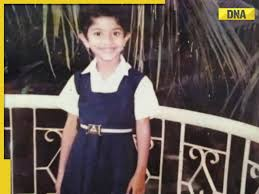

.jpeg)
| Born: | 9 May 1992 (age 32) Coimbatore, Tamil Nadu, India |
|---|---|
| Alma mater: | Tbilisi State Medical University |
| Occupation: | Actress |
| Years Active: | 2005-Present |
| Awards: | Filmfare Awards South,South Indian International Movie Awards,South Indian International Movie Awards etc |
BIOGRAPHY

Pallavi was raised and educated in Coimbatore, doing her schooling at Avila Convent School. Despite completing her medical studies in 2016 from the Tbilisi State Medical University, which is recognised by the Medical Council of India, She took her Foreign Medical Graduate Examination (FMGE) on 31 August 2020 in Trichy. Besides Badaga, Pallavi can speak fluently in Tamil, English, and Georgian.she always wanted to do something that involved dancing. She participated in several cultural events at school, gaining popularity as a dancer. Due to her passion for dance, which was supported by her mother, she participated in the dance reality show Ungalil Yaar Adutha Prabhu Deva on Vijay TV in 2008, and was a finalist in Dhee Ultimate Dance Show (D4) on ETV in 2009. Pallavi appeared in uncredited roles as a child actress in Kasthuri Maan (2005) and Dhaam Dhoom (2008) and appeared in few advertisements.
Career expansion and fluctuations (2017–present)
.jpeg)
The year 2017 marked her debut in Telugu with Sekhar Kammula's Fidaa, in the role of Bhanumathi, a feisty village girl from Telangana. Her performance in the film is regarded as one of the "100 Greatest Performances of the Decade" by Film Companion. She went onto win her first Filmfare Award for Best Actress – Telugu. Then she starred in the 2017 Telugu action comedy film Middle Class Abbayi alongside Nani, the film was a critical and commercial success. Later, she starred in the Tamil film Maari 2, a sequel to Maari (2015), opposite Dhanush, directed by Balaji Mohan.
- A song from the film, "Rowdy Baby", set a record by becoming the first south Indian and
Tamil song to clock over 1.5 Billion views on YouTube.
- In 2019, she played Nithya Lakshmi, a non-verbal autistic character, Her next film in
Tamil with actor Suriya, directed by Selvaraghavan titled NGK, released on 31 May 2019.
- In 2020, she was recognised by Forbes magazine as one of India's 30 under 30. She was the
only person from film industry in that list.
.jpeg)
- In 2021, she starred in the romantic drama Love Story directed by Sekhar Kammula alongside
Naga Chaitanya in her second collaboration with Sekhar Kammula after Fidaa (2017) and
Shyam Singa Roy opposite Nani in their second collaboration after MCA. Her performances in both
Love Story and Shyam Singha Roy earned her the Critics Award and the Best Actress award at the
Filmfare Awards South.
- In 2022 she appeared in Telugu film Virata Parvam opposite Rana Daggubati. Set against
the backdrop of the Naxalite movement in 1990s Telangana where she portrayed Vennela.
For her Tamil film Gargi,she dubbed her own lines in both Telugu and Kannada.
- In 2024, Pallavi played Indhu Rebecca Varghese, wife of Major Mukund Varadarajan,in Amaran.
Her upcoming films includes Naga Chaitanya's 23rd film, a film opposite Junaid Khan and Nitesh
Tiwari's adaptation of the Ramayana.